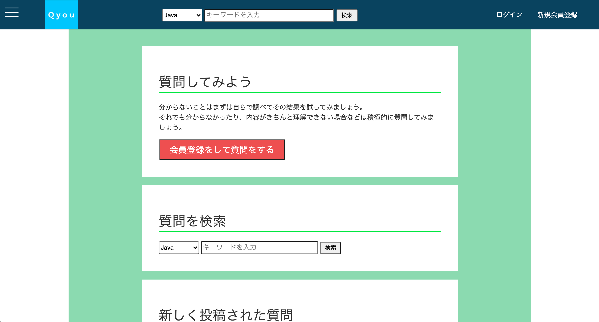
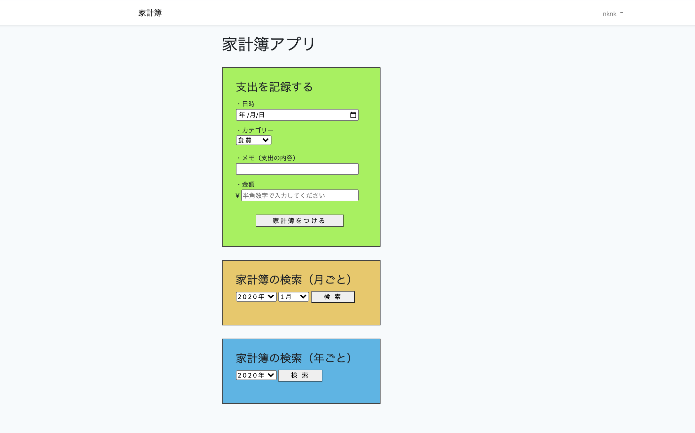

about me
パーソナル情報
中西 洸喜（なかにし こうき）
1995年09月16日生まれ / 25歳
経歴
- 2014年3月 : 山口県内の工業高校を卒業
- 2014年4月〜現在 : 山口県内の鉄鋼関連企業に就職
自己紹介
山口県在住の25歳です。
プログラミングに初めて触れたのは、高校在学時でC言語について基礎を学習。
課題研究という授業で、数独を自動で解答するプログラムの作成に挑戦。その際、プログラミングの面白さや魅力に気が付きました。問題解決までのプロセスを逆算して、それを実装し、思い通りに動作した時に言葉にならないくらいの達成感を得ることができました。
卒業後もプログラミングに携わることのできる職業に就こうと思っていたのですが、IT関連の募集が無かった為、地元の企業に就職。
高校卒業後から現在まで約6年半勤めていく中で、ただただ給料をもらう為だけに3交代という身体にも負担のかかる仕事を続ける意味ってなんだろうと、考えることが何度もありました。目標もなく淡々と仕事をするだけの日々で、モチベーションを高く維持するのは自分の中では難しく、働く意味や自分自身の人生について考えた時に、知らず知らずのうちに自分自身に様々な制限をかけて、自由を失っていたことに気が付きました。
これらのことに気が付いてからは、自分の中でのいろいろな物事についての考え方が大きく変わり、熱量や目標を持って何事も全力で取り組み、人生の終わりを迎えたときに「これでやりきった」と完全燃焼できる生き方をしようという風に決意しました。
その第一歩として、高校時代から憧れていたITエンジニアという職業への挑戦を決めました。
Skill
HTML,CSS
Java
JavaScript
jQuery
PHP
Laravel
2020年1月より独学でプログラミング学習を開始。(教材は主にProgate,ドットインストールを使用)
同年3月にプログラミングスクールに入校し、主にPHP,Laravelの学習を行う。6月にスクールを卒業してからも、興味を持った技術の学習やオリジナルのアプリケーションの作成を通して、自身のスキルアップを継続中
成果物
Laravel
① エンジニアのためのQ&A投稿アプリ
~アプリの概要~
- ログイン機能 (非ログイン状態のユーザーは閲覧可能なページの制限あり)
- 質問投稿機能 (質問投稿時にカテゴリーの選択を義務付ける事で、検索時に調べたい質問を見つけやすくしました)
- 回答投稿機能
- ベストアンサー設定機能 (ベストアンサーが設定された質問は解決済みの質問として、以降の回答を締め切り)
- 気になった質問や見返したい質問を保存できるブックマーク機能
- 質問検索機能
↓アプリへのリンク↓
② オリジナル家計簿アプリ
~アプリの概要~
- ログイン機能
- 支出記録機能 (日付・カテゴリー・メモ・支出金額の入力)
- 家計簿検索機能 (月ごと、年ごとの検索が可能。カテゴリー別の集計結果も算出し表示)
アプリの実行動画画面
↓アプリへのリンク↓
